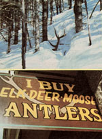
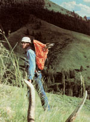
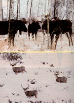
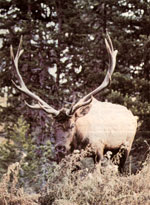

Discarded antlers can be valuable . . . and-if you know where to look-they're surprisingly easy to find.
There's one form of hunting that'll appeal to almost anybody who appreciates having a good excuse to roam the outdoors on a beautiful winter's day. And-although the sport can provide you with a collection of the giant racks of buck deer and bull elk and moose-there are no "seasons" or bag limits, and no licenses are required . . . because the idea is to collect the antlers after they've been shed. Best of all, anyone who has legal access to woods or wilderness where the wild ruminants roam can enjoy (and probably profit from) this activity, once he or she has picked up some pointers on the benign form of hunting.
THE ANIMAL WATCH
In my home state of Wyoming, the no-kill trophy chase begins just before January, with preseason scouting. At that time of year most wild game animals are fighting to survive winter's cold, and-on calm days-the antlered beasts usually band together in areas where a little browse has been uncovered by earlier winds. Moose frequently congregate in river bottoms, where they tear at willow buds to fuel themselves, while deer are more likely to group on the south (or warmer) sides of hills until another storm drives them into timber to escape the life-sapping winds.
I rarely approach any animals that I see but, instead, watch their habits through binoculars. (When humans get too close, the creatures will almost always run, and flight forces them to waste precious energy.) Then I use a map to record the spots where the deer and moose in my area seem to hang out. I draw lines indicating heavily traveled snow trails, too, and note timbered areas that appear to shelter big game in harsh weather. Tracks will usually lace these spots.
Not long after my scouting, deer and moose will begin to shed their antlers. The base of the horn loosens from the skull, and when the animal bumps a tree or moves its head quickly, the antlers shear off relatively painlessly. Larger racks seem to drop first. Probably this happens because big bucks, bull elk, and bull moose have so much leverage applied to their noggins by their weighty headgear that a quick twist of the neck wrenches off loose antlers far sooner than would be the case with spindlyhorned specimens (young animals with little overhead mass may well carry one or both projections far into the spring).
Once my region's moose and deer have discarded their racks, I focus on locating the winter hangouts of elk, animals that tend to molt later (they start to do so during the early days of March in Wyoming). Elk habitats, during the late winter and early spring, vary from sunny open slopes to snowbound timber tracts to treeless mountain valleys. I map such places and then wait until the sighting of a number of bare-headed bulls tells me that their shedding season is all but over.
The first part of spring, then, is prime time for elk trophy-taking. Don't delay your hunt too long, however . . . when summer comes, most of the past winter's antlers will be hidden from view by sprouted greenery or ruined by gnawing rodents.
THE SHEDDING SEASONS
If you're uncertain about just when to expect antlers to start hitting the ground in your region, here are some rough rules of thumb.
Game management officials in the West say that moose begin to drop their headgear in mid-December, and that they're usually finished by mid-January. It's a slightly different situation in Alaska, where-as game biologist Dave Hardy of Juneau points out-antler shedding is in full swing from December through February. In the northeastern states prime moose-shed time lasts from the end of December to midFebruary.
Deer can be expected to drop their horns from late January through February in the Southwest, while in such a typical western state as Wyoming the season spans late December to early February. Deer in the not-so-typical western state of California, on the other hand, discard their antlers from mid-November through April, with shed time varying from one herd to another, according to the state's wildlife biologists.
Eastern whitetail deer lose their head growths from December through early February, while midwestern bucks begin to shed in late January and continue into February. Maine's regional wildlife biologist Gary Donovan tells me, though, that the peak shed is earlier in his state . . . running from the end of December through mid-January. (Here's a special tip for eastern horn hunters: Deer yards, where whitetails gather during heavy winter snows, are excellent areas for springtime inspection, as are the trails leading to and from the yards and any nearby bedding and feeding locations.)
In the Southeast (Georgia, for example), buck deer begin to go "bald" in early January. The shedding usually peaks by the end of that month, but continues for a few weeks more. Alaskan deer, although thousands of miles to the north, are only slightly out of step with their southern cousins: Blacktails there meet the invisible barber from the middle of December until the end of January.
Elk, as I've already mentioned, are slow to shed their horns. Wyoming bulls do so from early March through the first of May. Californians can expect their state's wapiti to lose their racks from February through April.
No one, of course, can tell exactly when a given group of animals will shed, because nature sets no firm timetable for this event. An individual beast may even lose one horn, only to carry the other for some weeks longer. That's why preseason mapping of animal move ments is so important. The records help the antler hunter to determine which areas hold the greatest yield potential.
Be aware, though, that since the size and pattern of snowfall varies from one winter to the next, antlered critters can't be expected to occupy the same places every year. You'll have to prepare a new map of animal haunts annually.
ON THE HUNT
When I set out on my collecting forays, I carry a backpack frame on which to lash my trophies. I used to take the frame with the pack in place, but I've found that it's easier to tie antlers on when the bulky sack isn't there to get in the way. My water, rope, food, compass, and emergency survival gear are hauled in a small daypack, which I attach to the frame's upper portion. (By undoing my daypack's straps and looping them under the frame's top crossbars, I can be certain that these provisions ride comfortably.) Binoculars-which every outdoorsperson should own-and a camera are added to my gear. I then stuff one red bandanna in a pocket, and I'm ready to set out into the habitat that my benefactors are vacating.
Actually, I always delay my departure until the snow has melted enough to insure that any animal I do encounter won't be overtaxed if it runs from me. I prefer not to wait for total thaw, however . . . because horns are easily seen on snow, whereas they blend incredibly well with the bare earth and are thus tougher to spot in the warmer weather.
In any case, the "harvest" requires one heck of a lot of cross-country clambering, and lightweight binoculars-in the 7- to 10-power class-can save both energy and time: They'll help you confirm whether or not a "something" that appears to be an antler actually is . . . without your having to check out each possible find close up.
Careful scrutiny is necessary, because deer horns frequently resemble downed branches or exposed tree roots. Examine each object for the details that identify antlers. For example, are its tips pointed and lighter in color than the main beam? Does its surface seem smooth, or is it apparently bark-covered? Do small twigs branch off at the "expected" angles? And, finally, is it shaped like an antler? If you're still uncertain, try walking just far enough to get another perspective before actually heading for the spot. By following this routine, you should be able to shave the number of false alarms-and nonproductive side trips-to a minimum.
Moose wintering grounds-which are typically at relatively low elevations-are normally the first to be relieved of heavy snow, so during my explorations I thoroughly crisscross every area where I've formerly spotted bulls. Willow thickets, whose young shoots often keep the massive animals from starvation, are choice cover to search . . . but don't neglect boggy stream edges, which the moose like to travel, or thick lowland brush and timber in which they ride out storms.
Stay alert and try to look literally everywhere. I once found a fine antler on the bottom of a clear beaver pond while looking for trout. No doubt aquatic plants had lured the moose to feed there at the time when, as it happened, its horns were being discarded. I fished the unexpected bonus out by means of a shoestring noose tied to a willow branch.
Don't, however, feel that you have to carry home every horn you find. Sunbleached antlers are good for mementos, but they hold little real value. Freshly shed, brown-colored beams are the prizes to seek . . . and, of course, are also the hardest to spot.
When you do come upon the souvenirs you're after, remember that you could hurt yourself should you trip and fall on their pointed tips . . . so always hold antlers with the points down. It's also important, when hiking on slopes, to carry racks in the hand that's on the downhill side, since a person who's traversing steep terrain generally tries to fall uphill. I usually tie my horns to my backpack frame, but still I make sure they're pointed away from my neck and back.
THE PAYOFF
Antler hunting can provide you with great outdoor exercise and the thrill of finding what you're seeking. However, the additional benefits of the sport are probably greater than you'd imagine.
For one thing, by making a field survey of buck whitetail or bull moose antlers, the game hunter will be able to determine the animals' population density for a given area (these beasts seldom migrate to distant ranges, as do mule deer and elk). Since the dropped horns belonged to game that's still alive, that information should help the stalker decide whether or not the region contains enough animals to support a hunt during the next archery or gun season.
Of course, you might simply want to pick up some of these wilderness prizes for household display (the occasional "freak" horns you'll find are excellent conversation pieces). Or perhaps you'll use them in craft projects: I've seen antler-tip jewelry . . . a huge antler picture frame . . . horn belt buckles . . . and a variety of other items that incorporate the free-for-the-gathering raw material. [EDITOR'S NOTE: In the next issue of MOTHER, the author will show you how to make a number of different-and salable-craft products from antlers.]
Then again, many people search out discarded racks because of their market value. Where I live, most horns with brownish color can be sold for about $6.00 a pound, and the price is still rising. Some Oriental purchasers grind quality beams into a powder, which is sold as an aphrodisiac. Jewelry firms and novelty or tourist shops help keep the demand up by making curios from antlers.
As you can see, then, there's cash to be made . . . but the truth is, I hope the prices don't go any higher. As one businessman put it, "Pretty soon the rewards will be so great that poachers will start taking animals out of season just for their heads" (much as tusk hunters have helped bring elephants close to extinction).
Scavengers who search out already shed antlers, on the other hand, are providing the market with a quickly renewed resource.
Keep in mind, however, that national parks don't allow visitors to remove antlers, and neither do some wildlife preserves . . . illegal collection in such areas could put you in the slammer. And state laws vary: California, for example, allows residents to possess tule elk antlers but not to sell them.
The inconsistency of the rules points out the need for prospective horn hunters to contact game officials regarding local regulations before setting out after any trophies.
Interestingly enough, though, one of the largest legal antler roundups does take place on a preserve . . . the National Elk Refuge not far from Jackson, Wyoming. The catch is that only local Boy Scouts are issued the permit that allows them and their supervisors to comb the area, after the 7,000 to 10,000 elk that winter there have cast off their horns and left. One record season saw the Scouts gather a whopping 8,793 pounds of antlers in less than a full day.
I had the opportunity to go along and photograph that event one year, and I was stunned at the booty collected. The take would have covered a basketball court to a depth of 15 inches!
THE HORNS OF PLENTY
If you've done your scouting and mapping well, you may find yourself confronted by a really rather pleasant problem . . . that is, you could well collect so many antlers that you can't carry your entire haul home in one trip. In such a case, simply stash the surplus treasures in a place where few people will travel, and come back for them later.
In my somewhat remote area, I'm not much concerned that someone will stumble across my cache of hard-earned hatracks, but I do dread the possibility that I'll forget where I put them! My "security" is provided by the red bandanna I mentioned earlier. I just knot the kerchief around a low bush to flag me down on the return trip.
Of course, you won't always be blessed with such bounty. There are times when even the most conscientious searcher will come back empty-handed. For that reason I seldom go afield only to find antlers. To do so would invite letdowns, so I include a camera and telephoto lens among my gear. I snap away at whatever wildlife I see during horn hunts . . . photographing everything from sassy red squirrels and blue grouse to coyotes and elk calves (which I don't approach). Thus I seldom end a trip without rewards of one kind or another.
Furthermore, every time I advance to claim a fresh rack, all the work and previous disappointments seem worthwhile. Fingering the story of rut fights and winter hardships that's etched on every antler allows me to appreciate more fully the lives of the wild creatures that produced these trophies . . . which just lie there, free for the taking.
|
 Antlers are easier to find before the snow melts... There's money in the discarded headgear. |
 Carry your trophies with the points turned away from your back and neck |
 Moose seek shelter from storms in timbered areas. Deer like to browse on the south sides of hills. |
|
 Elk shed their racks late in the season |
|
|